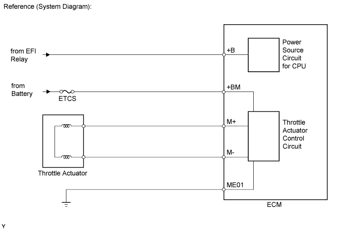
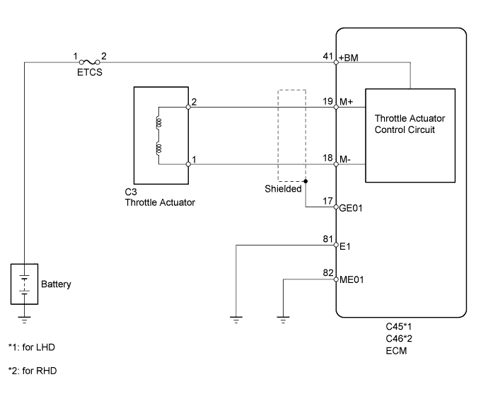
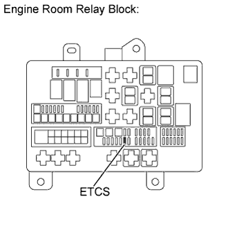
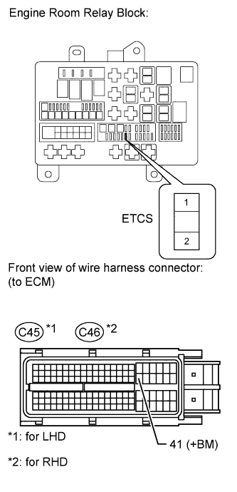
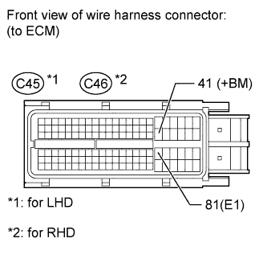

DTC P2118 Throttle Actuator Control Motor Current Range / Performance |

| DTC Code | DTC Detection Condition | Trouble Area |
| P2118 | An open in the ETCS power source (+BM) circuit (1 trip detection logic). |
|

| 1.READ VALUE USING INTELLIGENT TESTER (+BM VOLTAGE) |
Connect the intelligent tester to the DLC3.
Turn the engine switch on (IG).
Turn the tester on.
Enter the following menus: Powertrain / Engine and ECT / Data List / All Data / +BM Voltage.
Read the value displayed on the tester.
| Result | Proceed to |
| Below 11 V or higher than 14 V | A |
| 11 to 14 V | B |
|
| ||||
| A | |
| 2.INSPECT FUSE (ETCS) |
 |
Remove the ETCS fuse from the engine room relay block.
Measure the resistance according to the value(s) in the table below.
| Tester Connection | Condition | Specified Condition |
| ETCS fuse | Always | Below 1 Ω |
|
| ||||
| OK | |
| 3.CHECK HARNESS AND CONNECTOR (ECM - ETCS FUSE, ETCS FUSE - BATTERY) |
 |
Check the harness and connector between the ETCS fuse and ECM.
Remove the ETCS fuse from the engine room relay block.
Disconnect the ECM connector.
Measure the resistance according to the value(s) in the table below.
| Tester Connection | Condition | Specified Condition |
| ETCS fuse terminal 2 - C45-41 (+BM) | Always | Below 1 Ω |
| ETCS fuse terminal 2 or C45-41 (+BM) - Body ground | Always | 10 kΩ or higher |
| Tester Connection | Condition | Specified Condition |
| ETCS fuse terminal 2 - C46-41 (+BM) | Always | Below 1 Ω |
| ETCS fuse terminal 2 or C46-41 (+BM) - Body ground | Always | 10 kΩ or higher |
Check the harness and connector between the ETCS fuse and positive battery cable.
Remove the ETCS fuse from the engine room relay block.
Disconnect the cable from the positive (+) battery terminal.
Measure the resistance according to the value(s) in the table below.
| Tester Connection | Condition | Specified Condition |
| Positive battery cable - ETCS fuse terminal 1 | Always | Below 1 Ω |
| Positive battery cable or ETCS fuse terminal 1 - Body ground | Always | 10 kΩ or higher |
|
| ||||
| OK | |
| 4.INSPECT ECM (+BM VOLTAGE) |
 |
Disconnect the ECM connector.
Measure the voltage according to the value(s) in the table below.
| Tester Connection | Condition | Specified Condition |
| C45-41 (+BM) - C45-81 (E1) | Always | 11 to 14 V |
| Tester Connection | Condition | Specified Condition |
| C46-41 (+BM) - C46-81 (E1) | Always | 11 to 14 V |
|
| ||||
| OK | ||
| ||
| 5.INSPECT BATTERY |
Check that the battery is not depleted (Click here).
|
| ||||
| OK | |
| 6.CHECK BATTERY TERMINAL |
Check that the battery terminals and ECM ground are not loose or corroded.
|
| ||||
| OK | ||
| ||